Повний спектр безкоштовних вакцин за графіком МОЗ України
Складання індивідуального графіка вакцинації
Проведення вакцинації поза національним графіком (грип, вітряна віспа, ротавірус,рак матки, пневмококова інфекція....)
В наявності в центрі повний спектр вакцин від міжнародних виробників( Бельгія, Франція...)
Медичний сервіс
Консультація сімейного лікаря за записом (без черг і повних коридорів)
Виїзд лікаря за згодою додому
Виїзд на дом телемедичного консультування
Цілодобова медична консультація за телефоном
Послуги денного стаціонару(Ви можете не лягати до лікарні для планового лікування)
Послуги денного стаціонару прямо в вас на дому (виїзд медичної сестри для маніпуляції, крапельниць, виїзд лікаря з
обладнанням для контролю стану лікування)
Обслуговування і консультування малечі вдома

Гаряча лiнiя: (099) 18 88 103
(з 8:00 - 20:00)
Цiлодобова консультацiя: (061) 239 63 07
Реєстратура: 239 63 07
Бухгалтерiя: 239 63 08
пн - пт з 08:00 до 18:00 сб з 09:00 до 13:00 нд вихiдний